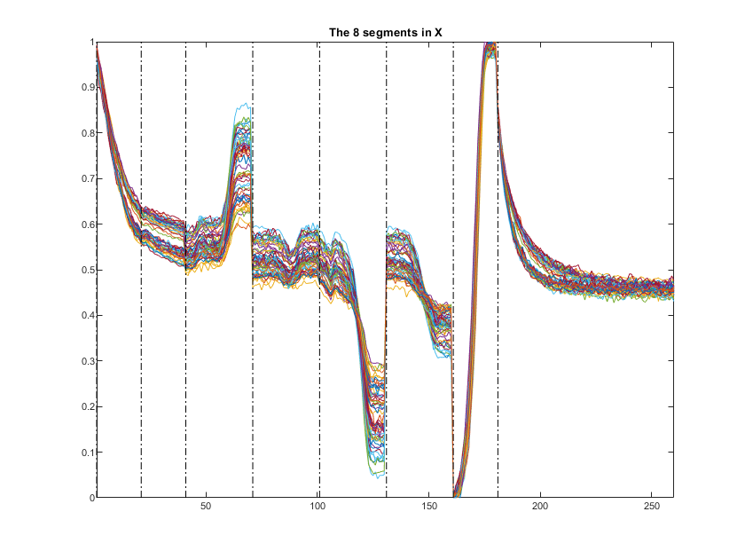
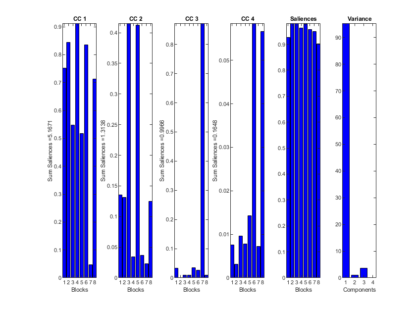
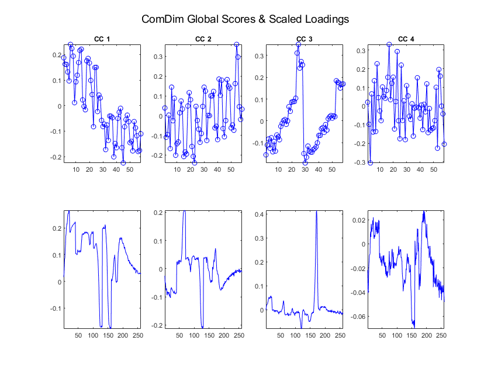

Contents
Load data
load('Lignin_Min.mat'); % in F:\Matlab\toolbox\IAQA\ComDim X=Lignine_Starch_smooth; % Concatenated TD-NMR signals Y=Lignine_Starch_Y; % Conc of Lignin [nR,nC]=size(X); Sample_Nums=[1:nR]';
seg{1}=[1:20];
seg{2}=[21:40];
seg{3}=[41:70];
seg{4}=[71:100];
seg{5}=[101:130];
seg{6}=[131:160];
seg{7}=[161:180];
seg{8}=[181:260];
nSegs=size(seg,2);
Seg_Nums1=[1:nSegs]';
clear collection; for i=1:nSegs collection(i).d=X(:,seg{i}); collection(i).v=seg{i}; collection(i).i=Sample_Nums; end BlockName=[' X1';' X2';' X3';' X4';' X5';' X6';' X7'];
[nCr,nCc]=size(collection); XVar_Nums=[1:nCc];
Plot Data
Figure_DNR(1); plot(1:260,X') axis tight yy=get(gca,'YLim'); hold on for i=1:nSegs plot([seg{i}(1,1),seg{i}(1,1)],yy,'k-.') end set(gca,'FontSize',8) tt=title(['The ',num2str(nSegs),' segments in X']); set(tt,'Fontsize',10), clear tt shg
ComDim calibration parameters
CDs=4; r=2; c=2; % Number of Common Components Options.ndim =CDs; % Normalise each data table Options.normalise =1; % No comments during calculations Options.loquace =0; % Output Local Scores, Scaled and Unscaled Loadings Options.Output='TPL'; Options.CompMethod='Normal';
Do ComDim
[ComDim_Res]=comdim_PCA_2020(collection,Options);
Statsitics
Saliences per CD
Figure_DNR(1); Sum_Sal_Dim=ComDim_Res.Sum_saliences_Dim.d; for i=1:CDs subplot(1,CDs+2,i); bar(ComDim_Res.saliences.d(:,i),'b'), axis tight; xlabel('Blocks'); ylabel(['Sum Saliences =', num2str(Sum_Sal_Dim(1,i))]); title(['CC ',num2str(i)]); end % Saliences per Block Sum_Sal_Tab=ComDim_Res.Sum_saliences_Tab.d; subplot(1,CDs+2,CDs+1); bar(Sum_Sal_Tab,'b'), axis tight; xlabel('Blocks'); title('Saliences'); % Variances subplot(1,CDs+2,CDs+2); bar(ComDim_Res.explained.d,'b'), axis tight; xlabel('Components'); title('Variance');
Plot ComDim Global Scores Q
Figure_DNR(1); for i=1:CDs subplot(2,CDs,i); plot(ComDim_Res.Q.d(:,i),'b-o'), axis tight; title(['CC ',num2str(i)]); subplot(2,CDs,CDs+i); plot(ComDim_Res.P.d(:,i),'b-'), axis tight; end suptitle('ComDim Global Scores & Scaled Loadings');